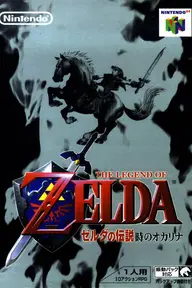
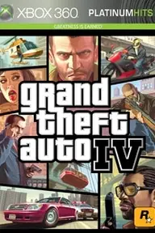
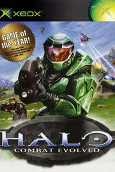

  
The Legend of Zelda: Ocarina of Time (1998)
The Legend of Zelda: Ocarina of Time (1998) revolutionized the action-adventure genre by successfully translating a beloved 2D franchise into a fully realized 3D world. Players control Link as he travels through the vibrant land of Hyrule, solving intricate puzzles, exploring vast dungeons, and battling iconic monsters.
The game introduced groundbreaking mechanics like Z-targeting, which set a new standard for 3D combat and camera control in video games. Its innovative time-travel narrative allows players to experience Link's journey from childhood to adulthood, deeply impacting the world around him.
The memorable soundtrack, composed by Koji Kondo, perfectly complements the emotional weight and epic scale of the adventure. With its perfect blend of exploration, storytelling, and gameplay, it rightfully holds its place at the very top of Metacritic's highest-rated games of all time.
Grand Theft Auto IV marked a massive leap forward for Rockstar Games, bringing the sprawling, crime-ridden streets of Liberty City to life with unprecedented realism. The game follows Niko Bellic, an Eastern European immigrant who arrives in America chasing the elusive promise of the American Dream, only to find a dark underworld of debt and betrayal.
Rockstar's Euphoria physics engine revolutionized character movement and vehicular damage, making every car crash and pedestrian interaction feel uniquely dynamic. The narrative is widely considered one of the best in gaming history, offering a gritty, mature, and emotionally resonant story about loyalty and consequence.
Beyond the main storyline, players can engage in a massive array of side activities, from playing darts at the pub to navigating the city's complex taxi and vigilante missions. Its meticulous attention to detail, atmospheric world-building, and tight gameplay mechanics cemented its legacy as a defining masterpiece of the seventh console generation.
Red Dead Redemption 2
Red Dead Redemption 2 is a monumental achievement in interactive storytelling, offering a breathtakingly detailed depiction of the dying American frontier in 1899. Players assume the role of Arthur Morgan, a senior enforcer in the Van der Linde gang, as they navigate a rapidly modernizing world that leaves outlaws like him behind.
The game's open world is a living, breathing ecosystem where weather patterns, animal behaviors, and NPC routines create an unparalleled sense of immersion. Arthur's deeply personal and tragic character arc is brought to life through exceptional motion capture and a phenomenal script that explores themes of redemption and loyalty.
Gameplay seamlessly blends intense gunfights, strategic hunting, and camp management, ensuring that every moment spent in the wilderness feels purposeful and engaging. By pushing the boundaries of graphical fidelity and narrative depth, Rockstar Games created a modern classic that sets a new benchmark for the entire gaming industry.